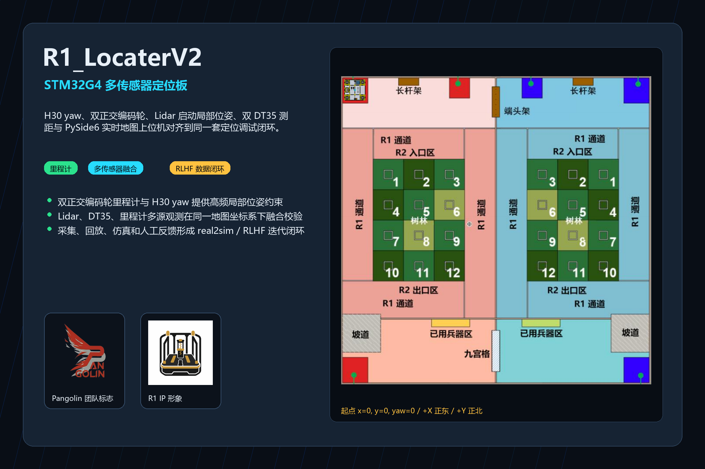
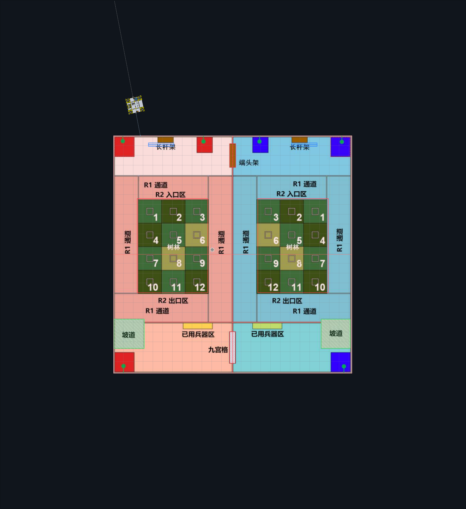
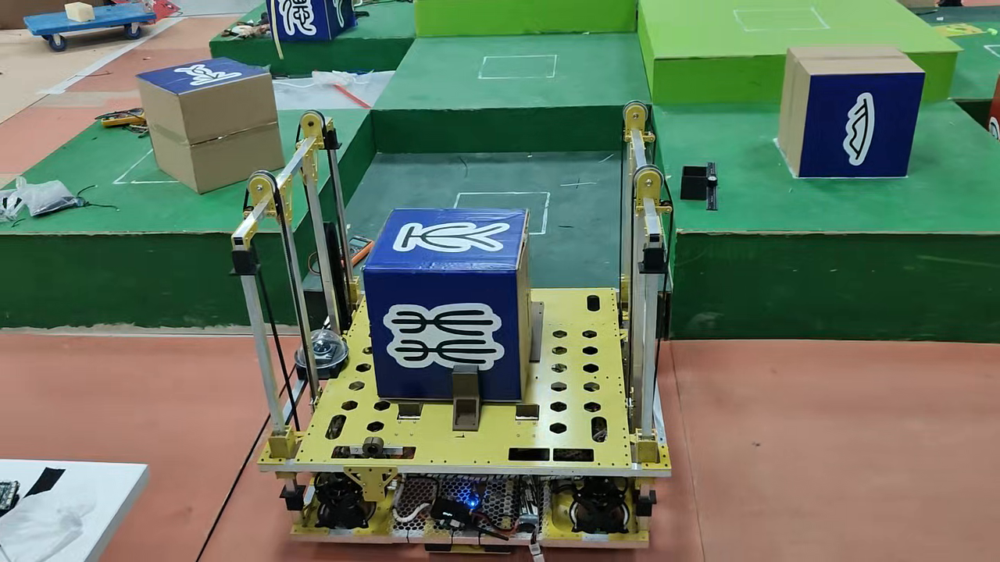

高频局部位姿
双正交编码轮里程计负责两帧 Lidar 之间的高频位移插值，H30 yaw 提供稳定航向基准。
面向 ROBOCON R1 的多传感器定位板：Lidar 启动局部位姿、H30 yaw、双正交编码轮里程计、双 DT35 测距和 PySide6 实时地图上位机对齐到同一套调试闭环。

启动局部零点，厘米级地图建模，实车数据可回放。
双正交编码轮里程计负责两帧 Lidar 之间的高频位移插值，H30 yaw 提供稳定航向基准。
Lidar 提供启动坐标系下的局部绝对位姿，DT35 根据场地墙体 raycast 约束侧向距离。
上位机记录 raw 串口、结构化 CSV 和地图截图，用于 real2sim 复盘、异常筛选和后续 RLHF 调参。


不是只读传感器，而是把坐标系、墙体模型、传感器置信度和回放证据统一起来。
红方启动区几何中心上电为 x=0, y=0, yaw=0；+X 指向地图正东，+Y 指向地图正北。
墙体、梅林、坡道和长杆架按不同置信度建模，避免把遮挡、人流、缺墙和地面反射误当成定位约束。
USART2 输出最终位姿、Lidar、编码轮、H30 yaw 和双 DT35 数据，服务底盘主控闭环。